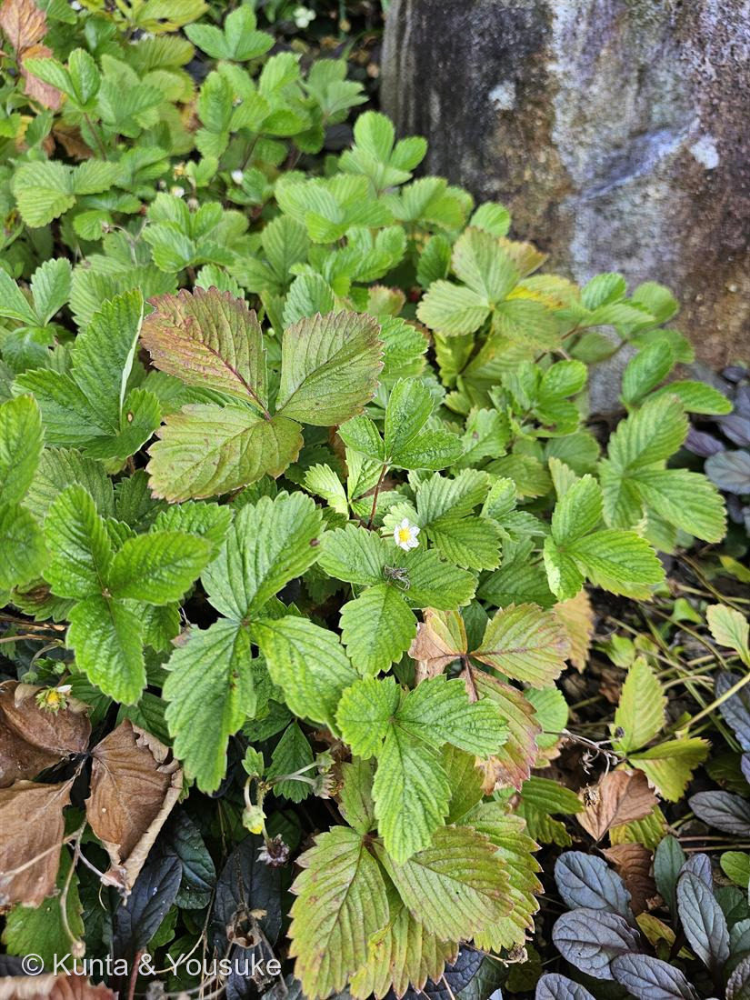
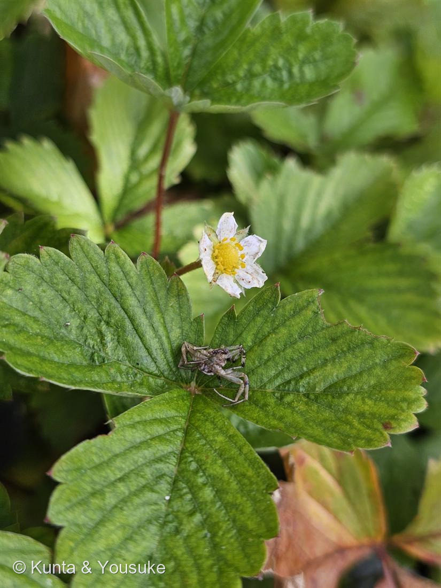

地図を読み込んでいるよ…
🔍 写真も地図も、押しているあいだ拡大して見られるよ（スマホは指を置いてすこし待ってね）。
🌍 の地図＝この子がもともと自生している場所を緑に。ヨーロッパ〜北半球温帯（日本では栽培・逸出）。
⚠出典は「ヨーロッパ〜北半球温帯」と広め。日本では栽培・逸出だから、日本は塗っていないよ。
⚠ 地図は国（日本と中国だけ県・省）までしか塗れないから、ほんとうの分布より広く見えていることがあるよ。地図はだいたいの場所。正確なところは、上の文を見てね。
ワイルドストロベリー（エゾヘビイチゴ）
Fragaria vesca L.
英名 · wild strawberry, woodland strawberry
バラ科 · Rosaceae（オランダイチゴ属）── 024 シモツケ・030 バラに続く3種目
燻太さんの提示「陽介の大好きなフルーツシリーズかも？」……ごちそうってだけじゃなかった。
名前と学名の由来 ── Fragaria＝「香る」
- ⭐属名 Fragaria は、ラテン語 fraga（イチゴ）＝fragrans「香る」から＝実の甘い香り。種小名 vesca は「小さい・食べられる」。──「香る、小さな、食べられる実」＝ワイルドストロベリーそのもの。
この植物のこと
- ランナー（匍匐枝）を伸ばして、その先に子株を作る＝自分のコピーで広がる。→ 033 ミントの地下茎と同じ戦略。
- 食べるイチゴ（オランダイチゴ F. × ananassa）は、南北アメリカの2種の交雑で18世紀のヨーロッパに生まれた八倍体。
このワイルドストロベリー（F. vesca）は二倍体で、ゲノムが小さく扱いやすいため、バラ科のモデル植物として研究に使われている。 - 実は小さいけれど香りが濃い。食べられる。
- 写真②の葉の上に、クモが一匹。
⭐ イチゴの「実」は、実じゃない
- 赤いあの部分は、果実ではない。
- 赤い部分は、花托（かたく）＝花の土台がふくらんだもの。偽果（false fruit）という。
- 本当の果実は、表面のツブツブ。ひとつぶひとつぶが痩果（そうか）という独立した果実で、その中に種が入っている。
- つまり、イチゴを1個食べるとき、ぼくたちは「200個くらいの果実」と「ふくらんだ土台」を一緒に食べている。
- ⭐思い出して。030 バラの「ローズヒップ」も、まったく同じだった。ふくらんでいるのは花托で、本当の果実はその中の小さな痩果。
バラも、イチゴも、同じバラ科。同じ手口。
⭐⭐ 030 バラで書いたあの話の「もう一方の主役」が、これ
- 030 バラのページに、こう書いた——
四季咲きの正体＝RoKSN（TFL1 のホモログ＝開花を抑えるブレーキ）。コウシンバラでは RoKSN にレトロトランスポゾンが飛び込んで機能を失っている。ブレーキが壊れているので、咲き続ける。（Iwata ら 2012, Plant Journal。同じ仕組みが四季なりイチゴにもある＝同じバラ科） - その「四季なりイチゴ」が、いま来た。
- イチゴの四季なり性も、KSN（TFL1 ホモログ）の機能喪失で生じる。バラとまったく同じ遺伝子。同じ論文。
- ⭐証拠は、この写真そのもの。
7月14日。花が咲いている。
そして同じ株に、赤い実がもう実っている（写真①）。
咲きながら、実る。──ブレーキが壊れている花の姿。 - あの町並みの垣根のバラと、足もとのイチゴが、ひとつの遺伝子でつながっている。
見分け ── 花の色を見て
- イチゴ属（Fragaria）：花は白 ← この写真。実は赤く甘い。
- ヘビイチゴ（Potentilla indica）：花は黄色。実は赤いが味がない（無毒だが、おいしくない）。
- → だから、おまけは「ヘビイチゴ」にした。見つけたら、白い花と黄色い花を並べて、答え合わせができる。